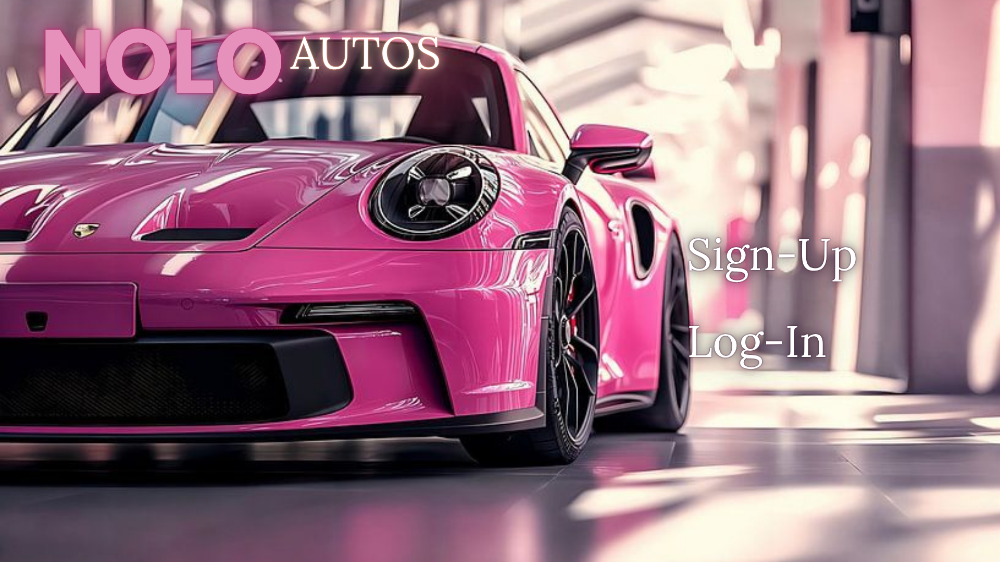
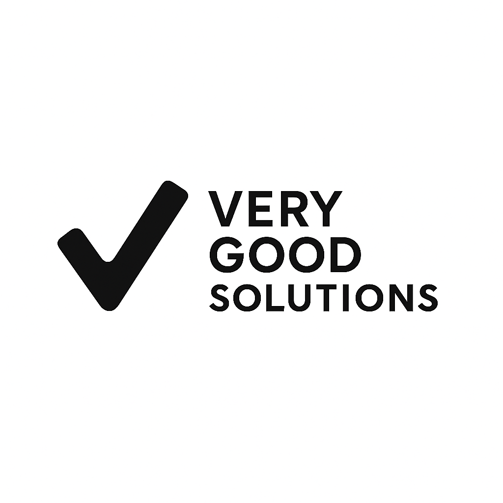

Built to Solve.
Built to Solve.
A desktop software solution engineered to streamline fleet management, automate rental pricing, and handle client bookings through a clean graphical user interface.

Delphi / RAD StudioDesigned to solve operational bottlenecks in vehicle hire management. The application provides an intuitive dashboard for registering vehicles, processing customer rentals, calculating variable rates based on hire duration, and generating structured system summaries.
A professional business website developed to establish online presence, clearly communicate services, and streamline client inquiries through a modern interface.

Designed and engineered for Very Good Solutions to deliver digital and IT services. The project focused on building a clean, responsive web architecture aligned with the company’s dark-grey aesthetic, enabling prospective clients to evaluate solutions and submit direct inquiries seamlessly.
This section will be updated as NOLORON completes additional software, cybersecurity, web and infrastructure projects.